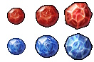
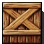
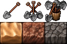
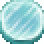
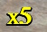
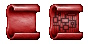
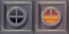
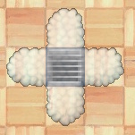
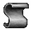

Tendry is you. For information about movement, see Keyboard Commands.
Tendry is you. For information about movement, see Keyboard Commands.
Tendry is you. For information about movement, see Keyboard Commands.
 Monsters block your way and must often be defeated to continue on.
To engage a monster in combat, strike it with your sword. You may also bump
into an enemy directly to fight it, but then it will get in the first hit.
Fight outcomes are not random, but are instead based on the ATK and DEF stats
of you and your enemy.
Right-click an enemy to view its stats on the side-bar and see how many HP
you would lose in order to defeat from your current position.
Beware of enemies that can strike you from a distance or when you step next to them.
You will want to refer to the authoritative Monster
Reference for more information.
Monsters block your way and must often be defeated to continue on.
To engage a monster in combat, strike it with your sword. You may also bump
into an enemy directly to fight it, but then it will get in the first hit.
Fight outcomes are not random, but are instead based on the ATK and DEF stats
of you and your enemy.
Right-click an enemy to view its stats on the side-bar and see how many HP
you would lose in order to defeat from your current position.
Beware of enemies that can strike you from a distance or when you step next to them.
You will want to refer to the authoritative Monster
Reference for more information.
Find health to raise your HP. Small potions give 15 HP, medium ones give 50 HP, large ones give 200 HP and huge ones give 1000 HP. Your HP has no limit, but don't squander it fighting tough monsters. If you waste too much, you may find your way blocked by monsters you can not defeat, and you will have to restore back to an earlier save point and try again.
 Power-ups will permanently raise your ATK or DEF. The damage you inflict each hit in combat is the difference between your ATK and the enemy's DEF, and vice-versa. This means that acquiring an ATK point causes your hits do one more point of damage, while a DEF point will cause enemy hits to inflict one less point of damage. They come in varieties providing 1, 3 and 10 of their respective stat.
 Search for equipment, such as swords and shields, to
fight more difficult monsters. Swords typically increase your ATK and shields
increase your DEF. Certain equipment gives you unique abilities.
There are also rare accessory items that give you special powers. See
Equipment for more information.
Search for equipment, such as swords and shields, to
fight more difficult monsters. Swords typically increase your ATK and shields
increase your DEF. Certain equipment gives you unique abilities.
There are also rare accessory items that give you special powers. See
Equipment for more information.
 Like walls in the real world, these are obstacles that prevent movement.
Like walls in the real world, these are obstacles that prevent movement.
 Crumbly walls are ready to fall apart when bashed
by a weapon, but they have to be looked for as they blend in with solid walls.
Crumbly walls are ready to fall apart when bashed
by a weapon, but they have to be looked for as they blend in with solid walls.
 Pits and water are not particularly dangerous
since Tendry is too smart to accidentally fall into them, but be careful
of monsters that fly or swim.
Pits and water are not particularly dangerous
since Tendry is too smart to accidentally fall into them, but be careful
of monsters that fly or swim.


 Doors are opened with keys of the same color. Each key will open one door.
You will encounter tricky puzzles involving opening these doors.
Doors are opened with keys of the same color. Each key will open one door.
You will encounter tricky puzzles involving opening these doors.
You may also close doors by standing on them and locking them with the Lock command (using up a key). You may walk along the top of closed doors while standing on them.
 A skeleton key can open any one yellow,
green or blue door.
A skeleton key can open any one yellow,
green or blue door.
Striking orbs with your sword will cause them to shoot bolts of energy out to open, close, or toggle one or more doors, force arrows, fire traps and lights in the room. Right-click orbs to see what they affect. Some orbs are damaged and can only be used once.
Like orbs, pressure plates are used to affect doors, force arrows, fire traps and lights. They are activated when something weighs them down. Three kinds of plates exist: one-time plates are only activated the first time they're depressed, multi-use plates are activated each time they're depressed, and on-off plates are activated both when they are depressed and when they are released. Right-click pressure plates to see what they affect.
 Trapdoor gates (or red doors) are opened when all of the
trapdoors in a room have collapsed.
Trapdoors fall away to pit or water after being stepped upon once.
Trapdoor gates (or red doors) are opened when all of the
trapdoors in a room have collapsed.
Trapdoors fall away to pit or water after being stepped upon once.
 Tarstuff gates (or black doors)
are opened when all of the tarstuff
in a room has been removed.
Tarstuff gates (or black doors)
are opened when all of the tarstuff
in a room has been removed.
 Greckle gates may only be operated by paying
the appropriate coinage (10 greckles).
Make sure to always have enough money on hand by defeating monsters.
You may also close greckle gates by standing on them and using the Lock command
(spending money).
Greckle gates may only be operated by paying
the appropriate coinage (10 greckles).
Make sure to always have enough money on hand by defeating monsters.
You may also close greckle gates by standing on them and using the Lock command
(spending money).
 Open gates can be closed by orb, pressure plates, or using the Lock
command (expending a key or money).
Be careful not to close gates you will need to pass through later.
Open gates can be closed by orb, pressure plates, or using the Lock
command (expending a key or money).
Be careful not to close gates you will need to pass through later.
 Crates can be used to reach the tops of closed doors so you can walk along them. Crates can be pushed, but only by your body and not your sword. You will step onto a crate when you try to push it in a direction where movement is blocked. While on a crate you are immune to oremites, mist and hot tiles.
 Shovels allow you to remove dirt blocks. Shovels come in groups of 1, 3 and 10, while dirt blocks come in varieties costing 1, 3 and 5 shovels. Shovels are affected by the level multiplier, while dirt blocks are not.
 Thin ice can appear in water. Thin ice will melt as soon as the player steps off it.
 The item multiplier shows the effect items will have relative to their base value in the current area (x1 = normal). For example, an attack power-up normally gives one point of ATK. When the multiplier is 5, then you would instead receive five points of ATK when picking one up. The multiplier influences health potions, ATK and DEF power-ups, and the cost of toggling greckle gates in the current area.
 The minimap shows the rooms you have explored in the current area
and marks your current location (boxed in the center).
If a room has any power-up items remaining, it will
be shaded golden. If only monsters remain, it will be shaded red.
If only closed doors remain in the room, it will be shaded blue.
Cleared rooms are white.
The minimap shows the rooms you have explored in the current area
and marks your current location (boxed in the center).
If a room has any power-up items remaining, it will
be shaded golden. If only monsters remain, it will be shaded red.
If only closed doors remain in the room, it will be shaded blue.
Cleared rooms are white.
 Acquiring a level map will mark rooms on your minimap that you have not yet explored in the current area. There are some secret rooms not marked on maps. Try to find them! There are two varieties, providing different levels of detail.
 Stairways connect areas of dungeons together.
Most levels are completed by finding stairs leading to the next level.
Stairways connect areas of dungeons together.
Most levels are completed by finding stairs leading to the next level.
 Floating platforms can be used to cross areas of pit or water.
Floating platforms can be used to cross areas of pit or water.
 Bridges must be anchored to a wall, floor, trapdoor, or similar object
to remain in place. If all its anchor points are removed, the bridge falls down into the depths, taking
everything it supported with it.
Bridges must be anchored to a wall, floor, trapdoor, or similar object
to remain in place. If all its anchor points are removed, the bridge falls down into the depths, taking
everything it supported with it.
 Hot tiles are dangerous to stand on. You will lose HP each time you touch one.
Hot tiles are dangerous to stand on. You will lose HP each time you touch one.
 Fire traps can be turned on or off by orbs or pressure plates. A fire trap is harmless until activated; an active fire trap will harm any creature that steps on it.
 Oremites are small creatures that feed on metal.
They are not dangerous by themselves, but you are forced to put metal items, like your sword,
away when walking around in an area covered with them.
Oremites are small creatures that feed on metal.
They are not dangerous by themselves, but you are forced to put metal items, like your sword,
away when walking around in an area covered with them.
 Mist is a deathly cold gas that will reduce the DEF of most creatures to zero. A mist vent will produce mist every time a combat occurs. If mist is connected to a mist vent, the mist will expand outwards.
 Dead briars block your way, but are not otherwise dangerous. However,
a patch of briars connected to a briar root will grow outwards
each time a combat occurs.
Standing next to a briar patch when fighting a monster is a very bad idea.
Dead briars block your way, but are not otherwise dangerous. However,
a patch of briars connected to a briar root will grow outwards
each time a combat occurs.
Standing next to a briar patch when fighting a monster is a very bad idea.
 Scrolls contain information that may or may not be useful. Step on the same square they are in to read them.
Force arrows prevent movement opposite to the direction they point. The north-pointing force arrow could be stepped onto from all directions except northwest, north, and northeast. Once anything steps onto a north-pointing force arrow, it can leave in all directions except southwest, south, and southeast. Force arrows can also be enabled or disabled by orbs and pressure plates. Disabled force arrows allow movement in all directions.

Bombs and powder kegs can be detonated either by a weapon strike or a burning fuse. Bombs are immobile, but powder kegs can be pushed by the player and certain monsters. Bombs have an explosion range of three tiles and powder kegs a range of one tile. Most entities, including the player, will be killed if they are within range of an explosion. If another bomb or powder keg is located within that range, it will explode as well. A fuse can be activated by stepping on a fuse endpoint or by an explosion. Fuses and explosions will not burn against the direction of force arrows.
 Tunnels allow you to quickly move
from one area of the room to another. When Tendry is standing on a tunnel
square and moves in the direction the tunnel faces, he will reappear on the
closest tunnel square in the same column/row of that direction.
If there is no other tunnel in that direction, then the destination tunnel will be in the opposite direction.
Tunnels allow you to quickly move
from one area of the room to another. When Tendry is standing on a tunnel
square and moves in the direction the tunnel faces, he will reappear on the
closest tunnel square in the same column/row of that direction.
If there is no other tunnel in that direction, then the destination tunnel will be in the opposite direction.
 Mirrors reflect the aumtlich's gaze,
and can also be used to weigh down pressure plates.
Tendry can push them around by himself, or he can use his sword to do so.
He can destroy them by striking them head-on with a sword.
Mirrors reflect the aumtlich's gaze,
and can also be used to weigh down pressure plates.
Tendry can push them around by himself, or he can use his sword to do so.
He can destroy them by striking them head-on with a sword.
When Tendry steps on an arrow rotator token, all force arrows in the room are turned 45 degrees in the direction indicated. The token then changes direction, and stepping on it again will rotate arrows back.
When Tendry steps on a tar/mud switcher, all tar in the room changes to mud, and vice-versa. Other versions also exist, including those that can switch gel.
Stepping on a vision token gives Tendry enhanced awareness of his surroundings for the current room. This allows him to see what is hidden under tarstuff. Stepping on the token again removes this effect.
When Tendry steps on a disarm token, his sword is taken away. The upside of this is that while he's swordless, he can walk on trapdoors without dropping them. He can get his sword back by stepping on the token again or leaving the room.
 Orthogonal squares prevent all movements of diagonal
directions. This means that if Tendry is standing on such a square, he can only
leave this square by north, east, south or west. It also means that he cannot
enter an orthogonal square diagonally.
Orthogonal squares prevent all movements of diagonal
directions. This means that if Tendry is standing on such a square, he can only
leave this square by north, east, south or west. It also means that he cannot
enter an orthogonal square diagonally.